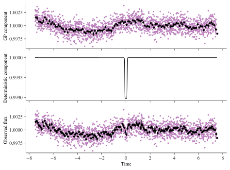
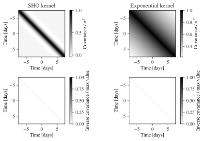
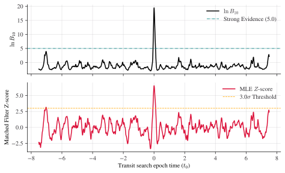
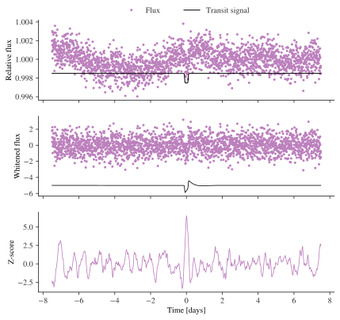
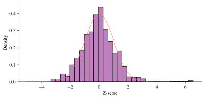

import numpy as np
import matplotlib.pyplot as plt
import plotting as plmGP noise modelling for transit detection
GP noise modelling for transit detection
This notebook illustrates how the choice of GP noise model affects matched-filter transit detection. The key steps are:
- Simulate a light curve with a known SHO GP noise model and an injected transit
- Visualise the covariance structure of the true kernel and a misspecified exponential kernel
- Compute the matched-filter Z-score under the correct GP and verify its statistical calibration
- Show how a misspecified SHO kernel at varying periods distorts the Z-score — either by underfitting the correlated noise or by absorbing the transit signal itself
from transieve import SimulatedLightCurve
from transieve.bin import plot_binned_light_curve
planet_params = {
"depth": (3.5 / (1 * 109)) ** 2,
"epoch": 0,
"duration": 0.2,
"period": 100,
}
gp_params = {
"log_omega": np.log(2 * np.pi / 4),
"log_sigma": np.log(5 * 1e-4),
"quality": 1 / np.sqrt(2),
"log_jitter": np.log(1e-3),
}
lc = SimulatedLightCurve.from_transit(
**planet_params,
# **planet_params | {"depth": 0},
gp_params=gp_params,
baseline=15,
seed=0,
multiply_signal=False,
)
time, flux, gp_realization, true_gp, true_signal = (
lc.time,
lc.flux,
lc.gp_component,
lc.gp_model,
lc.deterministic_component,
)
_, axes = plm.subplots(3, 1, sharex=True, rescale_height=0.4)
_ = lc.plot(axes)
plot_binned_light_curve(
time, gp_realization, bin_time=3 / 24, method="median", ax=axes[0], color="black"
)
plot_binned_light_curve(
time, flux, bin_time=2 / 24, method="median", ax=axes[2], color="black"
)
Covariance structure
The matched-filter Z-score is fundamentally governed by the inverse covariance matrix, \(C^{-1}\). While \(C\) describes how noise points “cling” together, \(C^{-1}\) encodes the instructions for pulling them apart. In the white-noise limit, \(C\) and \(C^{-1}\) are simply diagonal; however, for correlated stellar noise, \(C^{-1}\) acts as a whitening filter that suppresses (de-weights) residuals matching the expected noise correlation scales.
Below we compare \(C\) and \(C^{-1}\) for:
- the true SHO kernel — a stochastically-driven harmonic oscillator with \(Q = 1/\sqrt{2}\) (the critically-damped limit, which produces smooth, non-oscillatory covariance decay), and
- a misspecified exponential kernel — a simpler single-timescale model that cannot capture the smooth rolloff of the true covariance.
The exponential kernel is a common default choice and serves as a useful foil: it is wrong in a structured way that is easy to diagnose visually.
Deep Dive: For a more interactive look at how kernels translate to function space, see the Visual exploration of Gaussian processes.
from celerite2 import GaussianProcess, terms
from transieve.gp import plot_covariance_matrix
exp_gp = GaussianProcess(
kernel=terms.RealTerm(
a=2.0,
c=0.1,
),
t=time,
diag=(np.exp(2 * gp_params["log_jitter"])),
mean=1.0,
)
fig, axes = plm.subplots(nrows=2, ncols=2)
plot_covariance_matrix(true_gp, ax=axes[0, 0], thinning=1)
plot_covariance_matrix(exp_gp, ax=axes[0, 1], thinning=1)
plot_covariance_matrix(true_gp, ax=axes[1, 0], thinning=1, inverse=True)
plot_covariance_matrix(exp_gp, ax=axes[1, 1], thinning=1, inverse=True)
for ax in axes.flatten():
ax.spines["top"].set_visible(True)
ax.spines["right"].set_visible(True)
# Add titles for each column
axes[0, 0].set_title("SHO kernel")
axes[0, 1].set_title("Exponential kernel")
plt.tight_layout()
Matched filter Z-score
Under the correct GP, the Z-score time series should peak at the true transit epoch and be distributed as \(\mathcal{N}(0,1)\) everywhere else (null hypothesis). We verify both properties below.
Getting this calibration right is not cosmetic: if the off-transit Z-scores are inflated, every threshold crossing becomes a false alarm; if they are suppressed, real transits are missed. The plots and histogram below confirm that the SHO kernel with the true parameters produces a well-calibrated filter.
The Wald test statistic (also called the matched filter signal-to-noise ratio) is:
\[ Z = \frac{y^T C^{-1} s}{\sqrt{s^T C^{-1} s}} \]
In the white-noise case \(C\) is diagonal:
\[ C = \begin{bmatrix} \sigma_{t_1}^{2} & & \\ & \ddots & \\ & & \sigma_{t_n}^{2} \end{bmatrix} \]
and the Z-score reduces to the familiar sum \(\sum_i y_i s_i / \sigma_i^2\). For correlated noise, using the correct \(C^{-1}\) from the GP is essential to avoid inflated or suppressed Z-scores.
In the code, the denominator \(\sqrt{s^T C^{-1} s}\) is the template norm returned by MatchedFilter.template_norm_and_projection. It sets the scale against which the projection \(y^T C^{-1} s\) is measured, so that a Z-score of 1 always means a one-sigma detection regardless of the template’s amplitude or the noise level.
NoteMathematical interpretation of the GP as a function-space metric
While we treat \(C\) simply as a covariance matrix, it is formally the “reproducing kernel” for a Reproducing Kernel Hilbert Space (RKHS), \(\mathcal{H}\). This provides a deeper geometric interpretation of what happens during transit detection.
What is the RKHS Norm?
Every kernel \(k(t, t')\) defines a unique space of functions. In this space, the “complexity” or “roughness” of a function \(f\) is measured by its RKHS norm, \(\|f\|_{\mathcal{H}}^2 = \int f(t) k^{-1}(t, t') f(t') dt dt' \approx \sum_{i,j} f(t_i) [C^{-1}]_{ij} f(t_j) = y^T C^{-1} y\).
For a Gaussian Process, the log-likelihood (ignoring normalization constants) is: \(\ln p(\mathbf{y} \mid \theta) = \underbrace{-\frac{1}{2} \mathbf{y}^T C_\theta^{-1} \mathbf{y}}_{\text{Data Fit}} \underbrace{-\frac{1}{2} \ln |C_\theta|}_{\text{Complexity Penalty}} - \frac{n}{2} \ln(2\pi)\)
Mathematically, the inverse covariance \(C^{-1}\) acts as the metric tensor for this space.
In the context of transit detection
When we fit a GP to a light curve containing a transit, we are essentially performing a decomposition based on these norms:
- Stellar Noise: A good noise model (like the SHO kernel) has a low RKHS norm for smooth, oscillatory stellar variations. The GP “prefers” these shapes.
- The Transit: A transit signal \(s(t)\) usually has a high RKHS norm relative to the SHO kernel because its sharp ingress/egress “strains” the smooth expectations of the GP.
The Risk of Misspecification: If your kernel is too flexible (e.g., a very short timescale), the transit’s RKHS norm becomes small. The GP then “sees” the transit as a low-energy noise fluctuation and absorbs it, effectively “whitening away” the planet you are trying to find.
from transieve.gp import MatchedFilter
import transieve.transit as transit
monotransit_generator = transit.get_monotransit_from_epoch(
**planet_params, time=time, mean=0
)
matched_filter = MatchedFilter(true_gp, flux=flux - 1)
mf_statistics = matched_filter.get_search_profile(monotransit_generator)fig, axes = plm.subplots(2, 1, sharex=True, rescale_height=0.5)
mf_statistics.plot(axes=axes)
# axes[2].axhline(0, color="black", linestyle="--")(<Figure size 2007.87x1240.93 with 2 Axes>,
[<Axes: ylabel='$\\ln B_{10}$'>,
<Axes: xlabel='Transit search epoch time ($t_0$)', ylabel='Matched Filter Z-score'>])
whitened_signal = matched_filter.whiten(true_signal - 1)
whitened_flux = matched_filter.whiten(flux - 1)Show plotting code
fig, axes = plm.subplots(nrows=3, sharex=True, rescale_height=0.5)
ax = axes[0]
ax.plot(time, flux, marker=".", ls="", c="C0", mec="None", label="Flux")
ax.plot(
time, true_signal - 0.0015, label="Transit signal", c="black", lw=1
) # offset for visibility
ax.legend(
bbox_to_anchor=(1 / 2, 1.0),
loc="lower center",
ncol=3,
frameon=False,
columnspacing=3.0,
)
ax.set_ylabel("Relative flux")
ax = axes[1]
ax.plot(
time, whitened_flux, label="Whitened flux", marker=".", ls="", c="C0", mec="None"
)
ax.plot(
time, whitened_signal - 5, label="Whitened signal", c="black"
) # offset for visibility
ax.set_ylabel("Whitened flux")
ax = axes[2]
ax.plot(time, mf_statistics.z_score)
ax.set_xlabel("Time [days]")
_ = ax.set_ylabel("Z-score")
from scipy.stats import norm
fig, ax = plm.subplots(1, 1, rescale_height=0.7)
ax.hist(mf_statistics.z_score, bins=30, density=True)
pdf_x = np.linspace(-5, 5, 100)
pdf = norm.pdf(pdf_x, loc=0, scale=1)
ax.plot(pdf_x, pdf)
ax.set_xlabel("Z-score")
ax.set_ylabel("Density")Text(0, 0.5, 'Density')
The histogram confirms that off-transit Z-scores follow \(\mathcal{N}(0,1)\) closely. This means the filter is neither over- nor under-confident: a threshold of \(Z > 5\) carries its nominal false-alarm probability, and detections can be compared directly across different light curves or noise realisations.